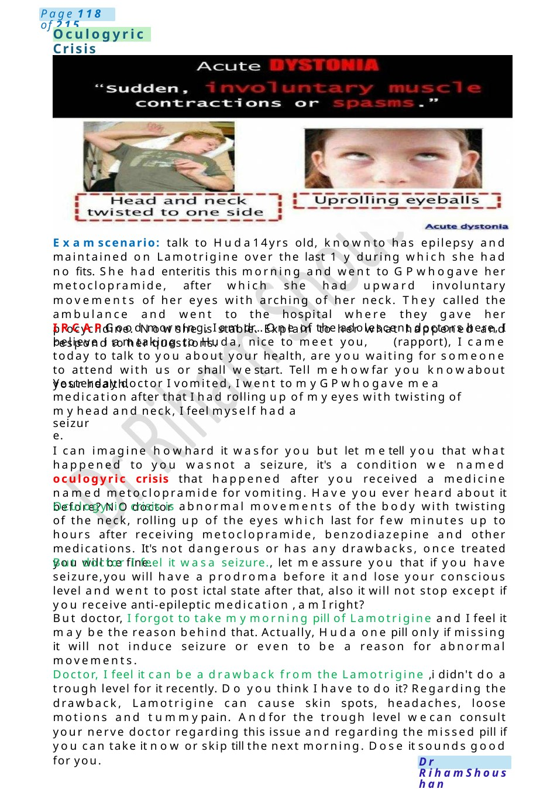
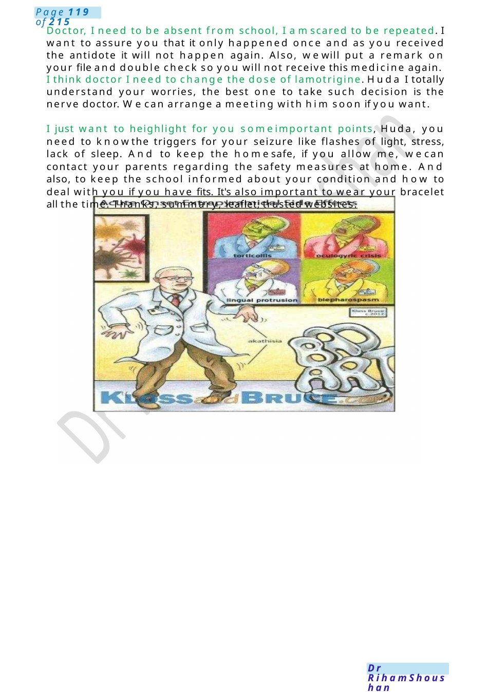
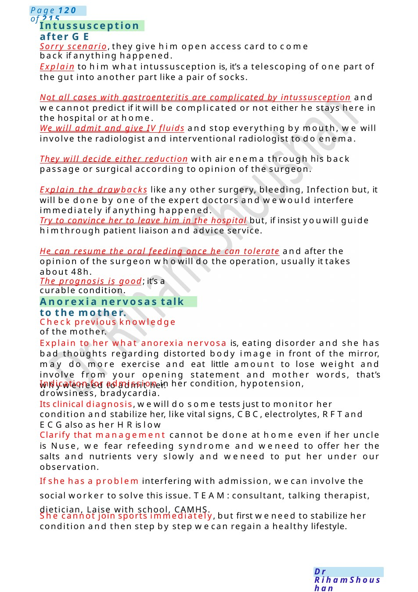

Oculogyric Crisis
Examscenario: talk to Huda14yrs old, knownto has epilepsy and maintained on Lamotrigine over the last 1 y during which she had no fits. She had enteritis this morning and went to GPwhogave her metoclopramide, after which she had upward involuntary movements of her eyes with arching of her neck. They called the ambulance and went to the hospital where they gave her procyclidine. Nowshe is stable. Explain to her what happened and respond to her questions. IRCAPGood morning, I am dr... One of the adolescent doctors here, I believe i amtaking to Huda, nice to meet you, (rapport), I came today to talk to you about you…
Scenario Summary
Examscenario: talk to Huda14yrs old, knownto has epilepsy and maintained on Lamotrigine over the last 1 y during which she had no fits. She had enteritis this morning and went to GPwhogave her metoclopramide, after which she had upward involuntary movements of her eyes with arching of her neck. They called the ambulance and went to the hospital where they gave her procyclidine. Nowshe is stable. Explain to her what happened and respond to her questions. IRCAPGood morning, I am dr... One of the adolescent doctors here, I believe i amtaking to Huda, nice to meet you, (rapport), I came today to talk to you about you…
Full Original Scenario

Oculogyric Crisis
Examscenario: talk to Huda14yrs old, knownto has epilepsy and maintained on Lamotrigine over the last 1 y during which she had no fits. She had enteritis this morning and went to GPwhogave her metoclopramide, after which she had upward involuntary movements of her eyes with arching of her neck. They called the ambulance and went to the hospital where they gave her procyclidine. Nowshe is stable. Explain to her what happened and respond to her questions.
IRCAPGood morning, I am dr... One of the adolescent doctors here, I believe i amtaking to Huda, nice to meet you, (rapport), I came today to talk to you about your health, are you waiting for someone to attend with us or shall westart. Tell mehowfar you knowabout your health.
Yesterday doctor I vomited, I went to myGPwhogave mea medication after that I had rolling up of myeyes with twisting of myhead and neck, I feel myself had a
seizure.
I can imagine howhard it wasfor you but let metell you that what happened to you wasnot a seizure, it's a condition we named oculogyric crisis that happened after you received a medicine named metoclopramide for vomiting. Have you ever heard about it before? NOdoctor
Oculogyric crisis is abnormal movements of the body with twisting of the neck, rolling up of the eyes which last for few minutes up to hours after receiving metoclopramide, benzodiazepine and other medications. It's not dangerous or has any drawbacks, once treated you will be fine.
But doctor I feel it wasa seizure., let meassure you that if you have seizure,you will have a prodroma before it and lose your conscious level and went to post ictal state after that, also it will not stop except if you receive anti-epileptic medication , amI right?
But doctor, I forgot to take mymorning pill of Lamotrigine and I feel it may be the reason behind that. Actually, Huda one pill only if missing it will not induce seizure or even to be a reason for abnormal movements.
Doctor, I feel it can be a drawback from the Lamotrigine ,i didn't do a trough level for it recently. Do you think I have to do it? Regarding the drawback, Lamotrigine can cause skin spots, headaches, loose motions and tummypain. Andfor the trough level wecan consult your nerve doctor regarding this issue and regarding the missed pill if you can take it now or skip till the next morning. Dose it sounds good for you.

Doctor, I need to be absent from school, I amscared to be repeated. I want to assure you that it only happened once and as you received the antidote it will not happen again. Also, wewill put a remark on your file and double check so you will not receive this medicine again.
I think doctor I need to change the dose of lamotrigine. Huda I totally understand your worries, the best one to take such decision is the nerve doctor. Wecan arrange a meeting with him soon if you want.
I just want to heighlight for you someimportant points, Huda, you need to knowthe triggers for your seizure like flashes of light, stress, lack of sleep. And to keep the homesafe, if you allow me, wecan contact your parents regarding the safety measures at home. And also, to keep the school informed about your condition and how to deal with you if you have fits. It's also important to wear your bracelet all the time. Thanks, summary, leaflet, trusted websites.

Intussusception after GE
Anorexia nervosas talk to the mother.
Sorry scenario, they give him open access card to come back if anything happened.
Explain to him what intussusception is, it’s a telescoping of one part of the gut into another part like a pair of socks.
Not all cases with gastroenteritis are complicated by intussusception and wecannot predict if it will be complicated or not either he stays here in the hospital or at home.
We will admit and give IV fluids and stop everything by mouth, we will involve the radiologist and interventional radiologist to do enema.
They will decide either reduction with air enema through his back passage or surgical according to opinion of the surgeon.
Explain the drawbacks like any other surgery, bleeding, Infection but, it will be done by one of the expert doctors and wewould interfere immediately if anything happened.
Try to convince her to leave him in the hospital but, if insist youwill guide himthrough patient liaison and advice service.
He can resume the oral feeding once he can tolerate and after the opinion of the surgeon whowill do the operation, usually it takes about 48h.
The prognosis is good; it’s a curable condition.
Check previous knowledge of the mother.
Explain to her what anorexia nervosa is, eating disorder and she has bad thoughts regarding distorted body image in front of the mirror, may do more exercise and eat little amount to lose weight and involve from your opening statement and mother words, that’s whyweneed to admit her.
Indication for admission in her condition, hypotension, drowsiness, bradycardia.
Its clinical diagnosis, wewill do some tests just to monitor her condition and stabilize her, like vital signs, CBC,electrolytes, RFTand ECGalso as her HRis low
Clarify that management cannot be done at home even if her uncle is Nuse, we fear refeeding syndrome and weneed to offer her the salts and nutrients very slowly and weneed to put her under our observation.
If she has a problem interfering with admission, wecan involve the social worker to solve this issue. TEAM:consultant, talking therapist, dietician, Laise with school, CAMHS.
She cannot join sports immediately, but first weneed to stabilize her condition and then step by step wecan regain a healthy lifestyle.